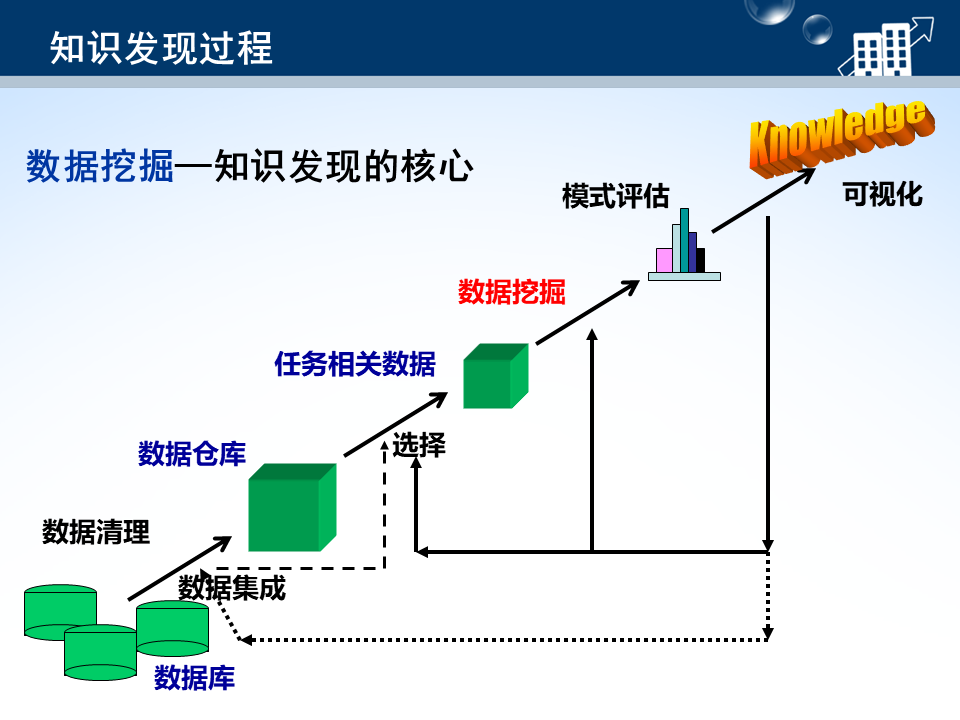
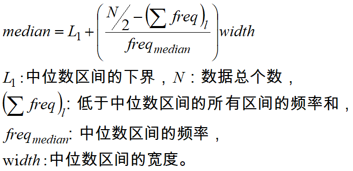
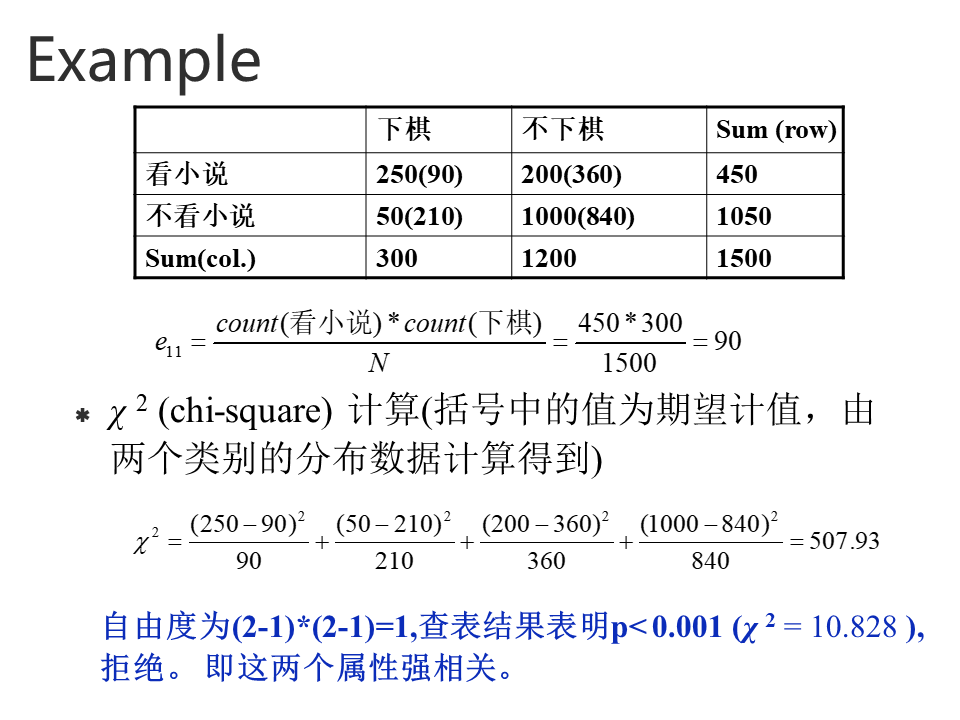
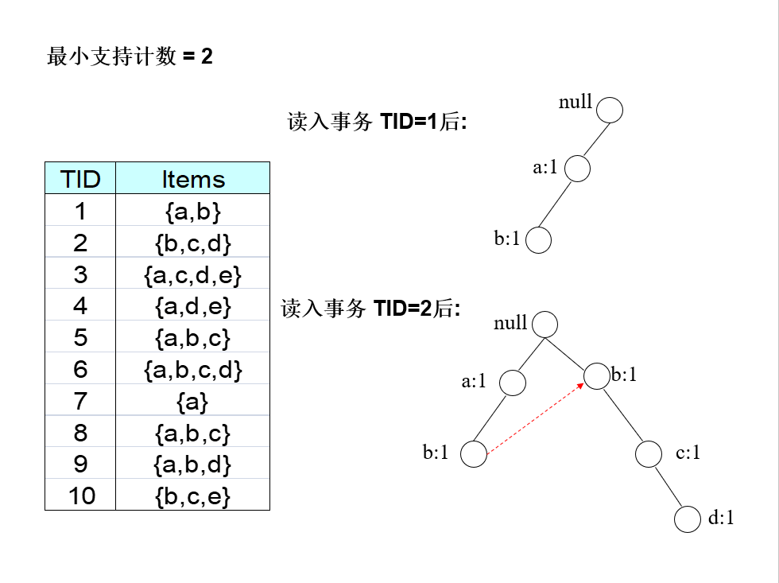
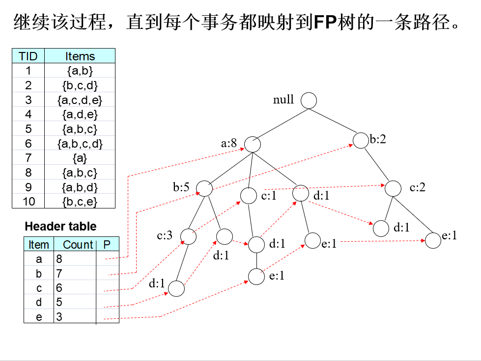
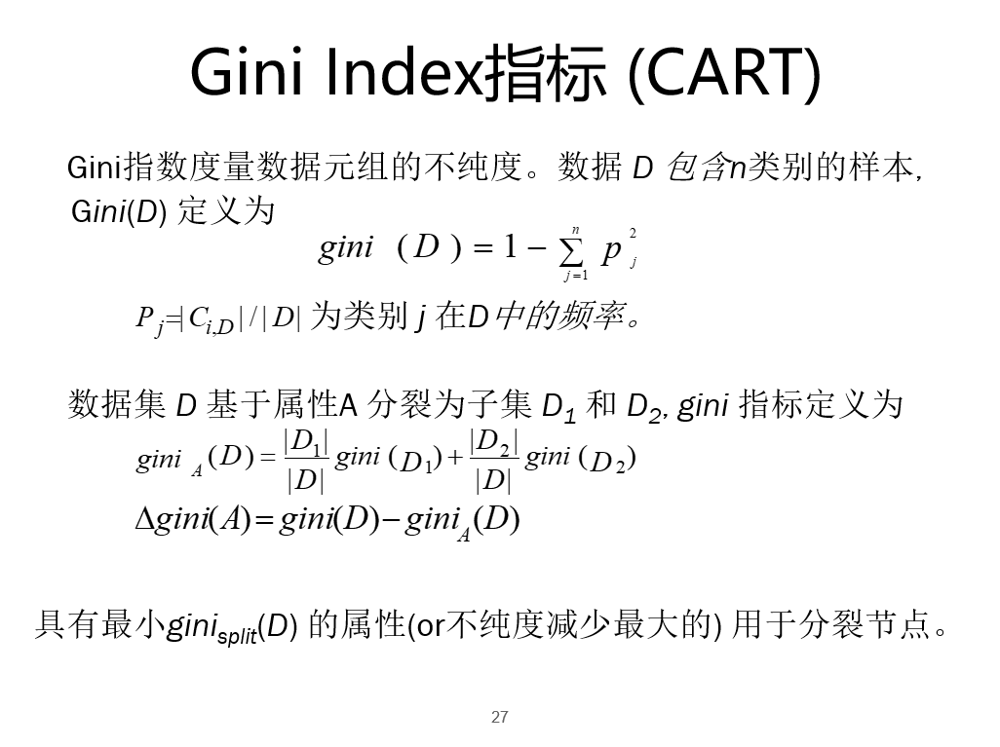
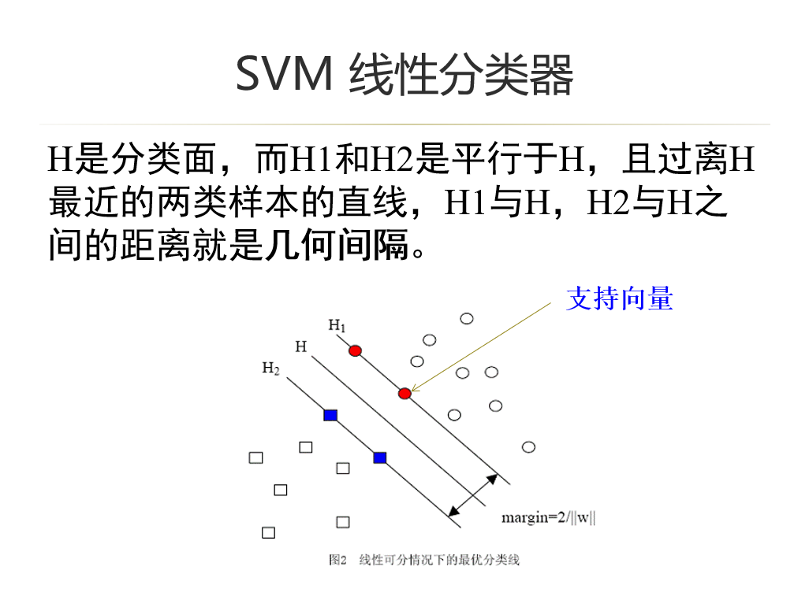
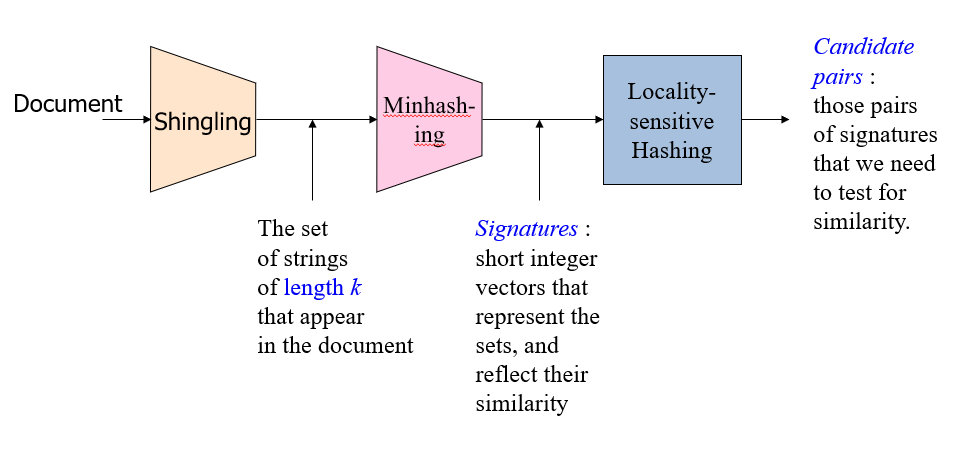
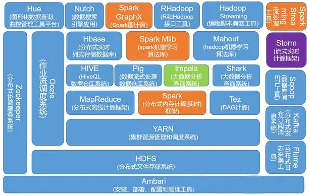
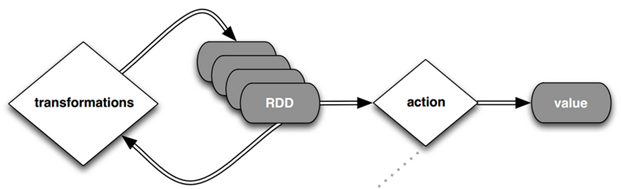

数据挖掘
期末考试前复习数据挖掘与大数据分析课程，做一个笔记总结，也以便以后查阅。
Chapter.1 简介
基本概念
什么是大数据？
大数据指，数据量规模巨大到无法通过传统数据库和软件技术在合理时间内处理、并整理成为人类所能解读的信息的，巨量的结构化或非结构化的数据。
什么是数据挖掘？
广义上指，从大量数据中挖掘有趣模式和知识的过程。
大数据4V特征
- Volume 数据规模大
- Velocity 数据流分析要求输入输出速度快
- Variety 数据有很多不同形式
- Veracity 数据的不准确性 [需要对数据的来源和类型进行验证，需要处理数据中的噪声和异常点，还要考虑到数据的暂时性，等等综合因素影响到数据的准确性和可信度]
数挖主要任务
- 分类
- 聚类
- 关联规则挖掘
- 离群点检测
KDD过程
数据挖掘是KDD的核心！

Chapter.2 认识数据以及数据预处理
属性类型
分类型（Categorical）
标称（Nominal）-（特殊：二元）
例: ID 号、眼球颜色、邮政编码
序数（ Ordinal ）
例: 军阶 、 GPA、用 {tall, medium, short}表示的高
此两者一般为离散的。
数值型（Numerical）
区间（Interval）
例: 日历、摄氏或华氏温度.
比率（Ratio）
例: 开氏温度、长度、计数
此两者一般为连续的。
离散属性(Discrete Attribute)
有限或无限可数个值
例: 邮政编码、计数、文档集的词
常表示为整数变量或字符串变量
连续属性(Continuous Attribute)
属性值为实数
例: 温度、高度、重量
实践中, 实数只能用有限位数字的数度量和表示.
连续属性一般用浮点变量表示
二元属性(binary attributes)
离散属性的特例
仅取两个不同值，常用0、1表示
对称的二元属性
两个值有同等重要性
例：性别
非对称的二元属性[重要!]
通常，一个值比另一个更重要
重要的值通常比较少出现，通常用1表示
例如，化验结果{阴性，阳性}，其中阳性较少，但更值得关注
数据的统计描述
中心性
均值(mean)
众数(mode)
一个数据集中可能有多个众数
中位数(median)
近似值估计(线性插值方法)：

中列数(midrange)
数据集的最大和最小值的平均值
散度
极差：max-min
四分位数(Quantile)：3个数将数据分成四等分
四分位数极差：Q3-Q1的距离
方差
标准差
五数概括：[min,Q1,median,Q3,max]
可以用盒图(boxplot)表示
相似性度量
标称属性
i与j两个对象相异度度量方法:
计算二元变量的相似度：
首先获取列联表
| 对象j | ||||
|---|---|---|---|---|
| 1 | 0 | sum | ||
| 对象i | 1 | q | r | q+r |
| 0 | s | t | s+t | |
| sum | q+s | r+t | p |
对称: 二元变量的两个状态具有同等价值
不对称: 二元变量的两个状态的输出不是同样重要
对称二元变量的相异度计算——简单匹配：
不对称二元变量的相异度计算：
对于非对称二元变量，负匹配数目t被忽略，即分母中删去0与0的匹配数。
数值属性
常使用距离来度量两个数据对象之间的相异性
闵可夫斯基(Minkowski)距离：
曼哈顿(Manhattan)距离：上式中q=1
欧几里德(Euclidean)距离：上式中q=2
另外距离也可以加权计算。
数据标准化/归一化
数据标准化：
计算平均绝对偏差
计算标准化的度量值
使用平均绝对偏差比使用标准差更具有鲁棒性
数据归一化[！！]：
计算混合类型变量描述的对象的相异度的基本思想是，将不同类型的变量组合在单个相异度矩阵中, 把所有变量转换到共同的值域区间[0.0, 1.0]上 。
- 最大最小法
- z-score
其他相似性度量方式
余弦相似性（向量内积空间的夹角）
马氏距离 （考虑数据局部分布）
相关系数 （皮尔森系数）
KL散度（数据分布比较）
数据预处理
数据清理[！！]
- 空缺值。用平均值或相近的样本平均值或用空值替代空缺值。
- 处理噪声数据，删除孤立点。可用分箱、聚类、回归等方法处理噪声。
数据集成
- 冗余数据分析
- 数值型：相关分析
- 标称型：卡方检验
- 集成多个数据库、数据立方体或文件
相关分析：计算相关系数(皮尔逊系数)
r=0不相关，r>0正相关，r<0负相关
卡方检验[！！重要！！]
σij是(ai,bj)的观测频度（实际计数）
eij是(ai,bj)的期望频度（单位是次数）
N是数据元组的个数

数据归约
- 得到数据集的压缩表示，但可以得到相同或相近的结果
- 数据归约策略：
- 维归约:小波分析、PCA、特征筛选
- 数量归约：回归、聚类、采样、数据立方体聚集
- 数据压缩：使用变换
小波变换:
保存小波较大的系数进行原始数据的压缩，主要用于图像分析中。
PCA——Principal component analysis（主成分分析），K-L变换:
基本思想是找到一个投影，其能表示数据的最大变化
特征筛选[！！] 用到信息熵
信息熵：刻画系统的混乱程度
条件信息熵：在已知X的基础上需要多少信息来描述Y
信息增益：刻画在已知X的基础上需要节约多少信息来描述Y
特征筛选即选择对分类变量Y信息增益大的特征，删去信息增益小的特征。
数据变换
- 规范化（归一化）和聚集
数据离散化
- 将连续数据进行离散处理
- 通过将属性域划分为区间，减少给定连续属性值的个数。区间的标号可以代替实际的数据值。
- 用高层概念代替底层属性值
- 通过使用高层的概念（比如：青年、中年、老年）来替代底层的属性值（比如：实际的年龄数据值）来规约数据。
Chapter.3 关联规则挖掘
定义
关联规则挖掘
- 产生频繁项集：发现满足最小支持度阈值的所有项集，这些项集称作频繁项集。
- 产生规则：从上一步发现的频繁项集中提取所有高置信度的规则，这些规则称作强规则（strong rule）。
频繁模式：数据库中频繁出现的项集。
项集(Itemset)：包含0个或多个项的集合。包含k个项的项集称为k-项集。
支持度计数(Support Count)：包含特定项集的事务个数。
支持度(Support)：包含项集的事务数与总事务数的比值。
关联规则：关联规则是形如 X→Y的蕴含表达式, 其中 X 和 Y 是不相交的项集
例子: {Milk, Diaper} → {Beer}- 支持度 support (X→Y): 确定项集的频繁程度。
置信度confidence(X→Y)：确定Y在包含X的事务中出现的频繁程度。
Apriori算法
基本思想
如果一个项集是频繁的，则它的所有子集一定也是频繁的。相反，如果一个项集是非频繁的，则它的所有超集也一定是非频繁的。
这种基于支持度度量修剪指数搜索空间的策略称为基于支持度的剪枝（support-based pruning）。
这种剪枝策略依赖于支持度度量的一个关键性质，即一个项集的支持度决不会超过它的子集的支持度。这个性质也称为支持度度量的反单调性（anti-monotone）。
Apriori流程和计算[！！！！]
由长度为k的频繁项集（通过连接，剪枝）产生长度为 (k+1) 的候选项集, 并且根据 DB扫描筛选这些候选。
- 连接：将Lk（频繁k-项集的集合）中所有项随机组合，得到所有可能的k+1项集的集合。
- 剪枝：将连接得到的集合中含有不频繁子集的(k+1)-项集删去，得到候选k+1项集的集合。
- 扫描：计算所有候选项集的支持度技术，将小于最小支持度计数的项集删去，得到频繁k+1项集的集合。
找到强关联规则[！！]
将频繁项集的集合Y划分成两个非空子集X和Y-X，使得X→Y-X满足置信度阈值。
例：
如果 {A,B,C,D} 是频繁项集, 候选项集为:
ABC →D, ABD →C, ACD →B, BCD →A, A →BCD, B →ACD, C → ABD, D →ABC，AB →CD, AC → BD, AD → BC, BC →AD, BD →AC, CD →AB
一般，计算关联规则的置信度并不需要再次扫描事务数据集。
规则{A,B,C} →{D}的置信度为support(ABCD)/ support (ABC)。
挑战和改进
- 挑战
- 事务数据库的多遍扫描
- 数量巨大的候选
- 候选支持度计数繁重的工作量
- 改进Apriori的基本思想
- 减少事务数据库的扫描遍数
- 压缩候选数量
- 便于候选计数
- 方法
- 哈希散列项集计数——压缩候选k项集
- 事务压缩——删除不可能对寻找频繁项集有用的事务
- 划分——分而治之【项集在DB中是频繁的, 它必须至少在DB的一个划分中是频繁的】
- 抽样——选取原数据库的一个样本, 使用Apriori 算法在样本中挖掘频繁模式
FP增长算法(Frequent-Pattern Growth)
如何构造FP树
- 支持度排序：扫描一次数据集，确定每个项的支持度计数。而将频繁项按照支持度的递减排序(为了给每个{a,b,c…}内部的字母排序)。L = {a:8, b:7, c:6, d:5, e:3}
- 构建FP树：第二次扫描数据集，在处理每个事务时无视(删去)其中的非频繁项，例：
- 读入第一个事务{a, b}之后，创建标记为a和b的结点。然后形成null->a->b路径。该路径上的所有结点的频度计数为1。
- 读入第二个事务{b,c,d}之后，为项b,c和d创建新的结点集。然后，连接结点null->b->c->d，形成一条代表该事务的路径。该路径上的每个结点的频度计数也等于1。
- 第三个事务{a，c，d，e}与第一个事务共享一个共同的前缀项a，所以第三个事务的路径null->a->c->d->e与第一个事务的路径null->a->b部分重叠。因为它们的路径重叠，所以结点a的频度计数增加为2。
- 继续该过程，直到每个事务都映射到FP树的一条路径。
注意：尽管前两个事务具有一个共同项b，但是它们的路径不相交，因为这两个事务没有共同的前缀


如何挖掘频繁模式[！！]
对于头表中每项构建条件模式基（一个“子数据库”，由FP树中与该后缀模式一起出现的前缀路径集组成）
构建条件FP树（根据对应项头表，将条件模式基看作为事务数据库，构造每一个频繁项的条件FP树，且删去了每棵树的非频繁节点）
挖掘频繁项集
- 如果该项的条件FP树为单个路径，则包含该项的频繁项集由该项与路径下所有节点组合。
- 如果该项的条件FP树为多路径，则针对树包含的每个项再次迭代，挖掘包含该项的频繁项集（即迭代得到的频繁项集加上该项）。
两算法区别
- 范式不同。产生、测试得到频繁项集 vs 在FP树上直接提取。
- 时间复杂度不同。FP增长算法比Apriori快了一个数量级。
- 内存占用不同。FP树使用内存较多。
- FP更复杂，实现难度更大。
评估方法
支持度、置信度、兴趣因子
Chapter.4 分类
基本概念
监督/无监督
监督学习（分类/预测）
数据集中对象的类标记已知
通过类标记的指导下学习数据中的模式
利用获取的模式或者模型对新数据进行分类预测
无监督的学习（关联规则，聚类分析）
数据集中对象的类标记（概念）是未知的
挖掘潜在的数据内部模式
生成/判别
生成模型（Generative Model）
希望从数据中学习/还原出原始的真实数据生成模型。常见的方法是学习数据的联合概率分布。E.g 朴素贝叶斯方法、隐马尔科夫模型等。
判别模型 (Discriminative Model)
从数据中学习到不同类概念的区别从而进行分类。如KNN，SVM, ANN, Decision Tree, etc.
分类/回归
分类
根据训练数据集和类标号属性，构建模型来分类现有数据和分类新数据
预测/回归
建立连续函数值模型，预测连续值或趋势比如预测空缺值
分类算法
决策树[!]
构造过程——决策归纳树算法（是一个贪心算法）
树以代表训练样本的单个结点开始。
如果样本都在同一个类，则该结点成为树叶，并用该类标记。
否则，算法选择最有分类能力的属性作为决策树的当前结点。
根据当前决策结点属性取值的不同，将训练样本数据集分为若干子集，每个取值形成一个分枝，有几个取值形成几个分枝。针对上一步得到的一个子集，重复进行先前步骤，递归形成每个划分样本上的决策树。一旦一个属性出现在一个结点上，就不必在该结点的任何后代考虑它。
递归划分步骤仅当下列条件之一成立时停止：
①给定结点的所有样本属于同一类。
②没有剩余属性可以用来进一步划分样本。
③如果某一分枝，没有满足该分支中已有分类的样本，则以样本的多数类创建一个树叶。
属性选择
属性选择度量
又称分裂规则，决定给定节点上的元组如何分裂
具有最好度量得分的属性（对分出的数据类别越“纯”）选定为分裂属性
三种度量
- 信息增益
- 信息增益率
- Gini指标
信息增益率

KNN
基本思想
选择与待分类样本距离最小的K个样本作为X的K个最近邻，最后以X的K个最近邻中的大多数所属的类别作为X的类别。
步骤
算距离：给定测试对象，计算它与训练集中的每个对象的距离；
找邻居：圈定距离最近的k个训练对象，作为测试对象的近邻；
做分类：根据这k个近邻归属的主要类别，来对测试对象分类。
优缺点
简单。适合多标签问题。
懒惰学习(收到样本后保存整个训练集，预测时才计算，而非用训练集提前算出模型)算法计算量大，内存开销大。样本不平衡时效果不好。可解释性差。
朴素贝叶斯分类
计算
将有最高后验概率的类作为预测结果，
即让P(X|Ci )P(Ci )最大化。
假设
类条件独立：
给定元组的类标号，假定属性值有条件地相互独立（即属性间不存在依赖关系）
SVM
追求结构风险最小化
支持向量/小样本
最大间隔化思想-有泛化能力
基本思想

分类面H的表达式：wx+b=0
支持向量为两分界面Plus-Plane(H1)\Minus-Plane(H2)上的样本点对应向量。
线性可分：
求解使得超平面具有最大内间间隔的w，b参数；（条件最优化问题！！！）
将问题转化为对偶问题进行快速求解；（凸二次规划问题利用Lagrange乘子法）
改进：加入松弛变量和惩罚因子的SVM
非线性问题：核函数
其他
过拟合问题
- 增加数据
- 删去异常点
- 增加正则项
- Train-Validation-Test
决策树中的过拟合
- 限制层高
数少的节点不再分割
先剪枝/后剪枝
Naive Bayes 贝叶斯理论
人工神经网络 感知机 BP网络
集成学习
学习准则
准确性
多样性：多个算法组合
集成策略[！！]
Bagging
Boosting
Stacking
评估
准确率：识别率
精度：被分类器标记为正类的样本实际为“正类”的比例
召回率：正样本标记为正的百分比
F1：精度和召回率的调和平均值
当类不平衡时：灵敏度（正确识别的正样本的百分比） ， 特效性（正确识别的负样本的百分比）
Chapter.5 聚类及离群点检测
什么是聚类
就是将数据分为多个簇(Clusters)，使得在同一个簇内对象之间具有较高的相似度，而不同簇之间的对象差别较大。
探索数据内部潜在的自然分组结构
无监督学习（无类别信号）
聚类算法分类[！！]
- 划分方法（partitioning method）
- K-means算法
- 层次的方法（hierarchical method）
- AGNES算法（自底向上、凝聚算法）
- DIANA算法（自顶向下、分裂算法）
- 基于密度的方法（density-based method）
- DBSCAN算法
- 基于网格的方法（grid-based method）
- STING算法
K-means
属于划分方法
目标：
将数据集D划分为K个互不相容的簇，使得簇内对象互相相似，簇间差异大。
步骤：
- 设定K，随机选取K个初始值，作为簇中心点。
- 将所有对象分配到最近的簇中（即找到与之距离最小的簇中心点）。
- 重新计算每个簇的中心点，并计算所有点到其所属簇中心的距离之和E。
- 迭代。继续重新分配并计算E。
- 当E收敛不变时结束。
优缺点
- 优点：
- 经典算法，简单、快速。
- 对处理大数据集，该算法是相对可伸缩和高效率的。
- 缺点
- 必须事先给出k（不是 parameter-free clustering algorithms）
- 对初值敏感，对于不同的初始值，可能会导致不同结果。
- 不适合于发现非球形状的簇或者大小差别很大的簇。（这适合使用DBSCAN）
- 对于“噪声”和孤立点数据是敏感的（ K-中心点）
DBSCAN
基于密度的聚类算法。
思想：
对于一个类中的每个对象，在其给定半径的领域中包含的对象不能少于某一给定的最小数目
在DBSCAN中，发现一个类的过程是基于这样的事实：一个类能够被其中的任意一个核心对象所确定
定义：
- 对象的ε-临域（ Eps 近邻）：以该对象为圆心，半径ε内的区域。
- 核心对象：如果一个对象的ε-临域至少包含最小数目MinPts个对象，则称该对象为核心对象。
- 直接密度可达：给定一个对象集合D，如果p是在q的ε-邻域内，而q是一个核心对象，我们说对象p从对象q出发是直接密度可达的。（核心对象到其邻域内的对象都是直接密度可达的，单向关系）
- 密度可达的：如果存在一个对象链p1，p2，…，pn，p1=q，pn=p，对pi∈D，（1<=i<=n），pi+1是从pi关于ε和MitPts直接密度可达的，则对象p(pn)是从对象q(p1)关于ε和MinPts密度可达的。（对象链从p1到pn-1全为核心对象，且距离不得超过ε，这样才密度可达pn。pn可以不是核心对象）
- 密度相连的：如果对象集合D中存在一个对象o，使得对象p和q是从o关于ε和MinPts密度可达的，那么对象p和q是关于ε和MinPts密度相连的。（o到p密度可达，o到q密度可达，则p和q密度相连，中间经过对象全为核心对象。p,q可以不是核心对象）
- 噪声: 一个基于密度的簇是基于密度可达性的最大的密度相连对象的集合。不包含在任何簇中的对象被认为是“噪声”
步骤
DBSCAN算法描述
算法5-5 DBSCAN
输入：包含n个对象的数据库，半径ε，最少数目MinPts。
输出：所有生成的簇，达到密度要求。
- REPEAT
- 从数据库中抽取一个未处理过的点；
- IF 抽出的点是核心点 THEN找出所有从该点密度可达的对象，形成一个簇
- ELSE 抽出的点是边缘点(非核心对象)，跳出本次循环，寻找下一点；
- UNTIL 所有点都被处理；
其他
什么是离群点
“离群点是一个数据对象，它显著不同于其它数据对象，好像它是被不同的机制产生的一样。”
离群点种类
- 全局离群点
- 局部离群点
- 集体离群点
LOF
局部异常因子(Local Outlier Factor)
计算公式暂略
n对象p的局部异常因子表示p的异常程度，局部异常因子愈大，就认为它更可能异常；反之则可能性小。
n簇内靠近核心点的对象的LOF接近于1，那么不应该被认为是局部异常。而处于簇的边缘或是簇的外面的对象的LOF相对较大，如前面图中对象o1， o2。
Chapter.6 大数据分析
哈希技术
整体框架

Shingling
一个文档的 k-shingle (或 k-gram) 是指连续k个字符一起出现的序列。
Example: k=2; doc = abcab. Set of 2-shingles = {ab, bc, ca}.
Option: regard shingles as a bag, and count ab twice.
一个文档可以通过k-shingles来很好表示.
Min-Hash 最小哈希
思想：
先给出n个随机序数列，用来代替原矩阵的行的序号（相当于n种矩阵换行的方式）。
定义哈希函数h(C)=第C列从上到下出现的第一个1（故称为“最小哈希”）的行序号在n个随机序数列中的对应数。
h(C)为[1,n]的列向量，在签名矩阵中位于第C列。
计算签名矩阵[！！]
实际实现时不用生成n个随机序数列，而是使用n个哈希函数（例如：h(r)=r mod 5)代替。
假设原数据矩阵为[X,Y]大小。
通过对C列从Row1到RowX的每个为1的元素的行号r依次计算多个哈希h(r)，找出并保留得到的对于C列来说每种哈希函数的最小哈希值。
得到一个签名矩阵[n,Y]，其中位于(x,y)的元素代表第y列的所有对应元素为1的行号在第x个哈希函数下计算得到的最小哈希值。
而这时
通过签名矩阵寻找相似的签名
计算签名矩阵两列中相同数字占比。
签名矩阵中相似的两项在输入矩阵中也可能相似。
检测签名相似的是否真的相似
【注意】计算输入矩阵中的两列二元非对称变量（0-1变量）的相似度Similarity：需要删去负匹配数目（0与0匹配）后，计算正匹配（1与1匹配）所占比例
局部敏感哈希Locality-Sensitive Hashing，LSH
将签名矩阵按行分块(band)，比如r行1块，对于每一块中的每列计算哈希（哈希桶数目尽量多）。
如果这块中有某两列落在一个bucket中，说明这两列可能相同。
相似的两列，至少有1band会出现落在同个bucket的candidate pair。
数据流挖掘
数据流挑战
数据流是无限长度的；是不断进化的；
- Single Pass Handling （单遍处理）
- Memory Limitation （内存限制）
- Low Time Complexity （低时间复杂度）
- Concept Drift （概念漂移）
概念漂移[！！]
模型尝试预测的目标变量的某个统计属性随时间发生不可预料的变化。
从本质上说，概念漂移指，数据流的概率分布P(C|X)随时间发生变化。
P(C|X)：在数据条件下，类别的概率分布。
概念漂移的检测方法
基于分布的检测：ADWIN
基于错误率的检测：PHT
漂移检测方法：DDM
分类
VFDT (Very Fast Decision Tree)
根据Hoeffding Bound利用少量数据构造动态决策树：
- 计算输入数据的所有属性的信息增益，找到增益最大的两个属性A,B。
- 在每个节点检查两者增益的差G(A)-G(B)若大于Hoeffding Bound，就基于该属性分裂。
- 如果不大于，继续输入数据，并重新计算增益。
聚类
线上+线下
线上：数据抽象，将数据整理成节省空间的数据结构。
线下：用聚类算法找到数据划分
线上：
微簇：将非常靠近的一簇数据点当作一个点。
将数据点宏观抽象，以微簇形式维护到内存中，且是动态变化的。
簇特征(Cluster Feature)
CF=(N,LS,SS)
N：点的个数
LS：（线性）所有行向量的和，即每维（每一列）的数据之和
SS：（平方）所有行向量的平方和
CF具有可加/减性！！可以实现动态增量计算
线下：Kmeans/DBSCAN
Hadoop/Spark
什么是Hadoop/Spark
Hadoop是一个基于MapReduce的分布式超大数据集处理软件框架。
关键词：处理大数据，分布式计算，使用大量廉价的商用硬件
Spark也是分布式计算环境，它启用了内存分布数据集，除了能够提供交互式查询外，它还可以优化迭代工作负载。它是对 Hadoop 的补充，可以在 Hadoop 文件系统中并行运行。
但不同于MapReduce的是——Job中间输出结果可以保存在内存中，从而不再需要读写HDFS，因此Spark能更好地适用于数据挖掘与机器学习等需要迭代的MapReduce的算法。
Hadoop设计准则
Automatic parallelization & distribution
Hidden from the end-userFault tolerance and automatic recovery
Nodes/tasks will fail and will recover automaticallyClean and simple programming abstraction
Users only provide two functions “map” and “reduce”
Hadoop生态

HDFS —— 存储[!]
Hadoop Distributed File System
Namenode
维护文件分块存储信息的元数据。（文件本身默认按64M每block分块。）
Namenode通过心跳机制持续检测Datanode。
Datanode
保存分块过的文件数据，默认每个block会复制三份保存在不同Datanode上。
MapReduce —— 计算
Input >> Map Task >> Shuffle&Sort >> Reduce >> Output
Users only provide the “Map” and “Reduce” functions.
“Shuffle&Sort”相当于自动将所有块映射后的某种键值对合并送到对应reduce函数中。
Kmeans先在各块中分配簇(map)，再更新中心点(reduce)。
KNN先在各块中找本地近邻点(map)，再从所有本地近邻点中找到全局近邻点(reduce)。
MapReduce vs Spark[!]
MapReduce存在缺点：
适合单遍计算，多遍算法效率低。
使用广播，没有高效率的数据分享方法，多轮IO操作导致很慢。
而Spark的优点：
使用RDD,resilient distributed dataset (弹性分布式数据集)，它是存在内存中的只读数据库，速度快。
Spark提供多个语言的API以供调用。
RDD 操作

transformations类似map，在已有数据集上得到新的数据集。
所有transformations都是lazy的，只有需要actions时才进行前置的transformations
actions类似reduce，汇总分布的数据并处理。
transformations和actions是函数类型的统称，不是具体的某个函数。